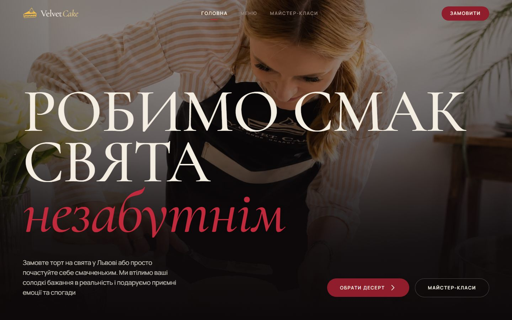
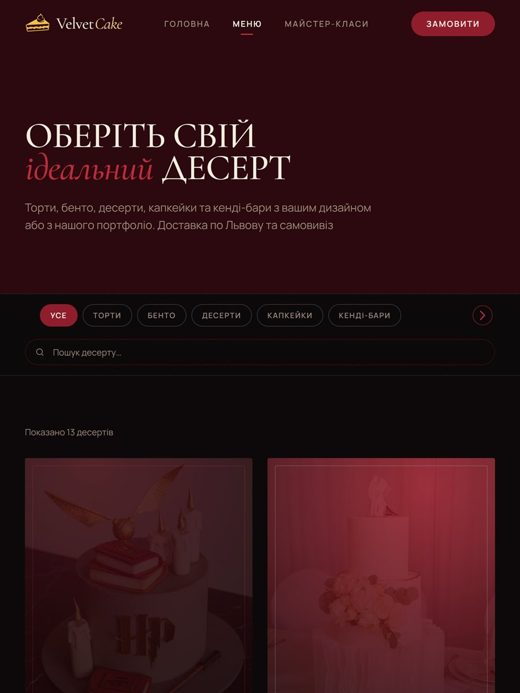
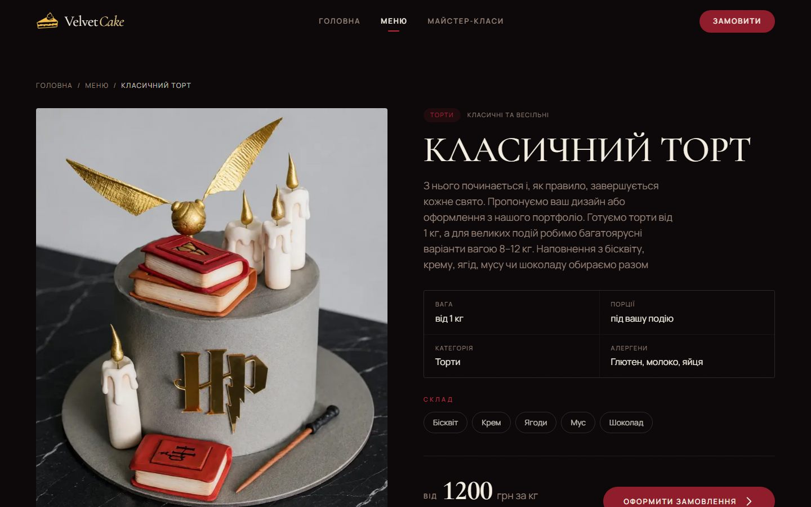
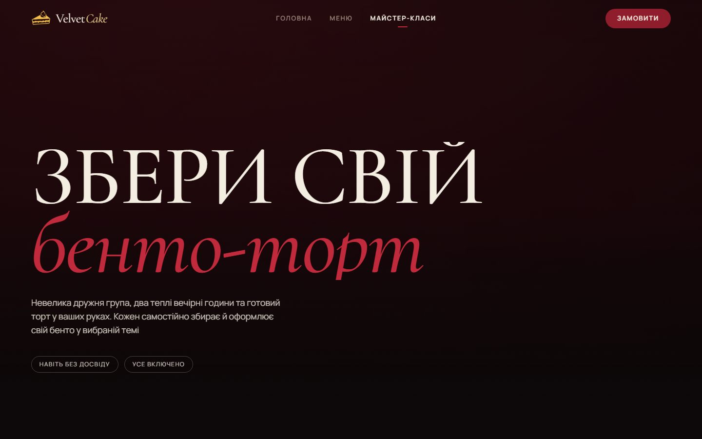
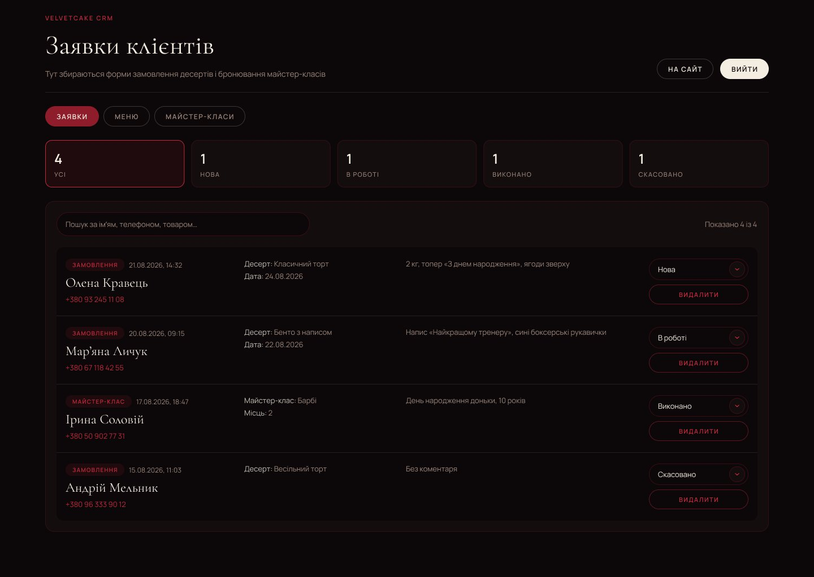
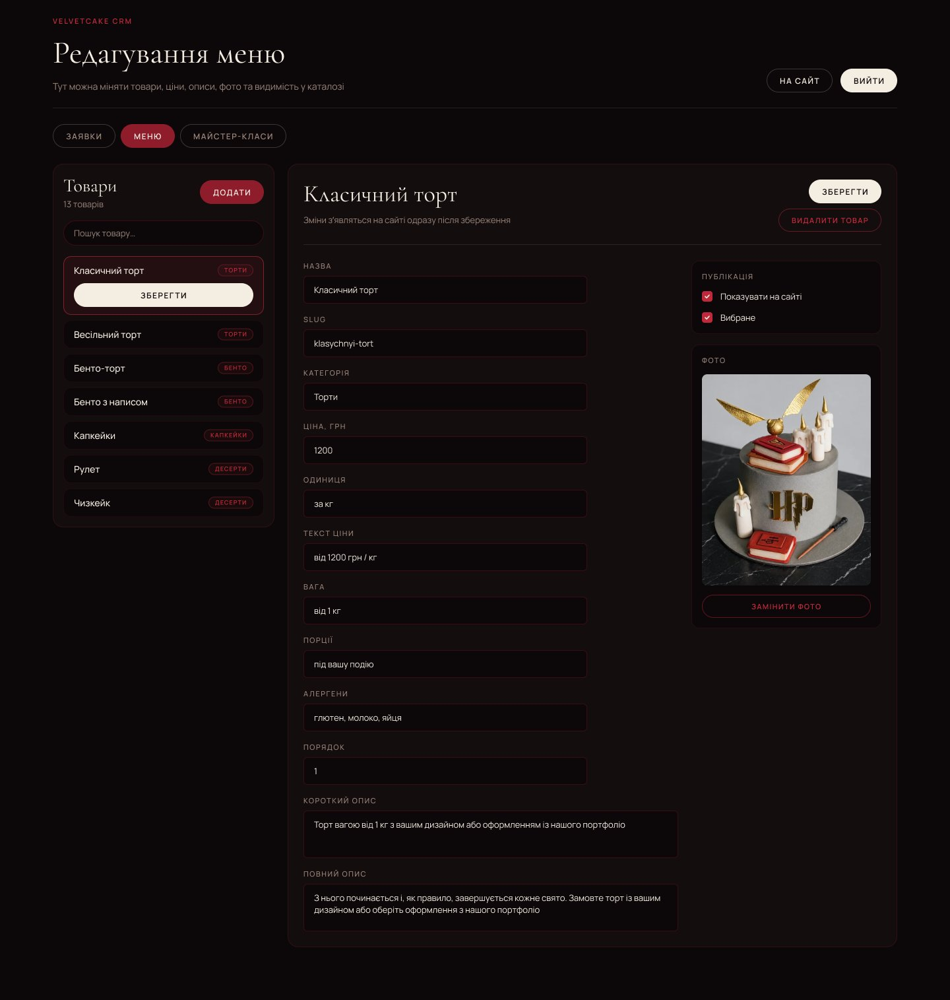
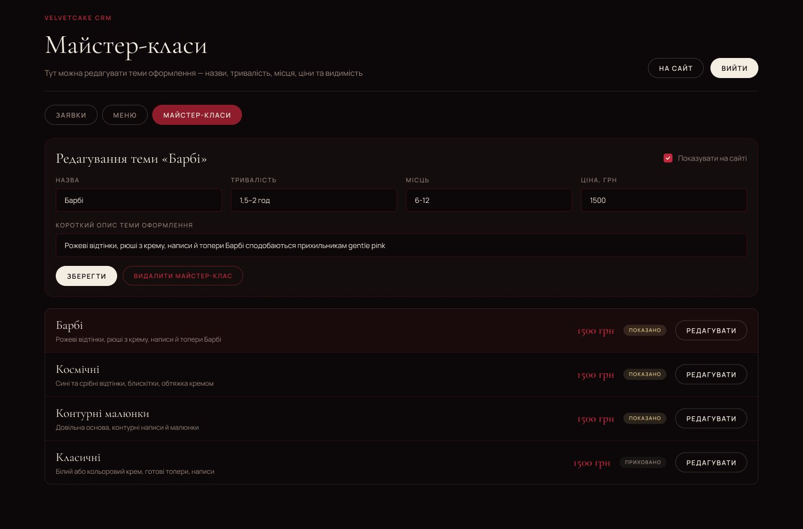

VelvetCake

Strona, katalog i CRM dla lwowskiej cukierni: zamówienia ze strony, Instagrama i Telegrama w jednym miejscu
O marce
VelvetCake to cukiernia ze Lwowa: torty na zamówienie, bento, babeczki, candy bary, desery i warsztaty dekorowania bento. Wizualnie marka opiera się na nastroju dark luxury: ciemna paleta, powściągliwa typografia, a kadr niesie sam deser
Desery kupuje się tu oczami, więc witryna działa dokładnie tak dobrze, jak wygląda. Ale za witryną jest druga połowa biznesu, której klient nie widzi: zamówienia przychodzące codziennie z trzech różnych kanałów
Zadanie
Zamówienia w cukierni przychodzą zewsząd: ktoś pisze na Instagramie, ktoś na Telegramie, ktoś chce zamówić od razu na stronie. Dopóki wszystko to żyje w wątkach czatu, rzeczy się gubią, a obraz dnia trzyma się w czyjejś głowie
Potrzebna była strona, która niesie nastrój marki i przyjmuje zamówienia, a jednocześnie miejsce pracy dla cukierniczki, gdzie trafia każde zgłoszenie i gdzie sama zmienia menu, ceny i warsztaty, bez programisty
Rozwiązanie
Nie landing page z przyciskiem "napisz do nas", lecz aplikacja z dwoma wejściami: publiczna strona dla klientów i zamknięty CRM dla zespołu pod /admin
Strona to katalog deserów, osobna strona dla każdego deseru, warsztaty i FAQ. Zgłoszenie z dowolnego formularza od razu staje się kartą w CRM. Zamówienia z Instagrama i Telegrama trafiają do tego samego procesu ręcznie, więc każdy klient jest widoczny na jednej liście
Menu, ceny, zdjęcia i tematy warsztatów edytuje się w CRM: zmiana w panelu i strona się aktualizuje
Katalog
Pięć kategorii: torty, bento, babeczki, candy bary, desery. Do tego wyszukiwanie po nazwie i filtr kategorii
KategoriePunkt wejścia dla kogoś, kto jeszcze nie wie, czego chce, i po prostu ogląda witrynę
WyszukiwanieDla tych, którzy przyszli po konkretny deser albo wybierają go na okazję
Strona deseruZdjęcia, waga, liczba porcji, alergeny, cena "od". Każdy deser dostaje własną stronę, a nie wiersz na liście
FAQTerminy realizacji, dostawa po Lwowie w firmowym opakowaniu lub odbiór osobisty, torty piętrowe 8-12 kg, projekt z referencji albo z portfolio
Pytania o skład, alergeny i terminy są w cukierni najczęstsze. Kiedy odpowiada na nie strona, a nie wątek czatu, znacznie więcej zamówień dochodzi do końca
Zamawianie
Na stronie deseru jest jeden przycisk: "Zostaw zgłoszenie". Otwiera się krótki formularz: imię i telefon, bez rejestracji, bez koszyka. Po wysłaniu klient widzi, że skontaktujemy się w ciągu godziny w godzinach pracy
WarsztatyOsobna strona z tematami dekorowania, ceną, liczbą miejsc i przebiegiem zajęć. Rezerwacja przez ten sam krótki formularz plus liczba miejsc
Instagram i TelegramPozostają w pełni działającymi kanałami: kontakty są w nagłówku, na stronie menu i w stopce. Te zamówienia cukierniczka wprowadza do CRM ręcznie, żeby proces był kompletny
Każde zgłoszenie ze strony zapisuje się ze znacznikiem, skąd przyszło: ze strony deseru czy ze strony warsztatów. CRM pokazuje to od razu
CRM
Panel działa na tej samej domenie pod /admin, logowanie mailem i hasłem. Cztery sekcje
ZgłoszeniaTrafia tu każdy formularz ze strony. Na górze liczniki statusów: nowe, w toku, zrobione, anulowane; pod nimi wyszukiwanie po imieniu, telefonie lub produkcie. Każde zgłoszenie to karta z typem (zamówienie albo warsztaty), datą, kontaktem, deserem i notatką klienta, a status zmienia się bezpośrednio na karcie. Cukierniczka prowadzi zamówienie od pierwszego telefonu do wydania i zawsze widzi, co jest w toku
MenuProdukty, ceny, opisy, zdjęcia i widoczność w katalogu. Produkt można ukryć ze strony jednym przełącznikiem, bez usuwania
WarsztatyTematy dekorowania: nazwy, czas trwania, liczba miejsc, ceny i widoczność
Dla programistyAkcje serwisowe: przywrócenie menu albo warsztatów do stanu bazowego z kodu, wczytanie zgłoszeń demonstracyjnych na pokaz
Wszystko, co zmienia się w CRM, zapisuje się w Firestore i pojawia się na stronie bez przebudowy i bez programisty
Technicznie
- Aplikacja React zbudowana przez Vite; strony ładują się osobnymi chunkami, więc CRM nic nie kosztuje zwykłego odwiedzającego
- Firebase: Auth do logowania w CRM, Firestore na zgłoszenia, menu i warsztaty, Storage na zdjęcia produktów
- Aktualizacje w czasie rzeczywistym: nowe zgłoszenie pojawia się w CRM bez przeładowania
- Katalog z kategoriami i wyszukiwaniem, osobna ścieżka dla każdego deseru
- Bazowe menu i warsztaty są zaszyte w kodzie, a zmiany z CRM nakładają się na wierzch: zawsze jest do czego wrócić
- Płynne przewijanie Lenis, animacje GSAP i Motion, wersja na telefon, meta tagi i canonical na każdej stronie
Rezultat
Cukiernia dostała system, a nie samą stronę: witryna przyjmuje zgłoszenia całą dobę, a każde zamówienie, ze strony, Instagrama i Telegrama, zbiera się w jednym CRM ze statusami
Menu, cenami, zdjęciami i warsztatami zarządza sam zespół. Programista nie jest już potrzebny, żeby dodać tort albo zmienić cenę
Ekrany





